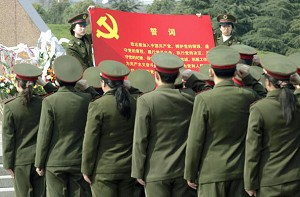
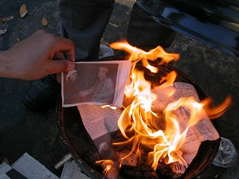

16/4/05 — Từ DAJIYUAN.COM
Những quan chức cao cấp trong chính phủ Trung Quốc đang để mắt theo dõi trước tình hình lượng người thoái xuất khỏi ĐCSTQ (Đảng Cộng sản Trung Quốc) đang tăng nhanh, với con số sắp đạt một triệu người.
Từ khi Cửu Bình —Chín bài bình luận về đảng cộng sản— được loan truyền trong công chúng, vấn đề “là đảng viên” đã trở thành một trong những tiêu điểm “câu chuyện thường ngày” ở Trung Quốc.

Những quân nhân đang “tự nguyện” tuyên thệ trung thành với ĐCSTQ tại Thượng Hải, 5/4/2005. Những cảnh tuyên thệ “hoành tráng” như thế này được phát sóng lặp lại khắp quốc gia, nhằm ngăn chặn làn sóng thoái đảng đang len lỏi vào hàng ngũ đảng viên.
Trước thực tế là lòng trung thành của đảng viên đang bị xói mòn, ĐCSTQ đã phát động phong trào “bảo tiến” (bảo trì sự tiến bộ của đảng) với mục đích nạp năng lượng cho đảng.
Sau hội nghị tại Trường Đảng trung ương hồi trung tuần tháng Hai, những cán bộ chóp bu đã cử 58 Đoàn Giám sát ĐCSTQ đi khắp Trung Quốc. Họ được cử đi để tổ chức lại đội ngũ cán bộ nóng cốt tại từng tỉnh thành, để học tập đường lối của đảng, tổ chức thệ nguyện lại những gì đảng viên phải thề khi gia nhập đảng. Những sự kiện này thậm chí đã được đưa lên trang tin nổi bật của các kênh truyền thông của nhà nước.

Người dân Trung Quốc thiêu huỷ những hình ảnh, vật phẩm của ĐCSTQ để tự giải thoát bản thân mình khỏi những liên hệ với ĐCSTQ
Ông Trương, một cán bộ cao cấp đã nghỉ hưu của ngành công nghiệp quân sự Trung Quốc, đã nói: “Gần đây, đã có thông báo chính thức đến ngành nguyên tử và bên công nghệ quốc phòng cũng như các nơi khác trong quân đội, rằng những người như chúng tôi, bằng bất cứ giá nào, cũng không phép được rút lui khỏi đảng, kể cả khi chúng tôi đã ngưng đóng đảng phí. Chúng tôi thấy rằng nó giống như mafia. Chỉ có thể vào nhưng không bao giờ được ra mà không bị trừng phạt. Nó giống như xã hội đen”.
Để đối phó với làn sóng thoái đảng, ĐCSTQ đã khích lệ các đảng viên thệ nguyện đi thệ nguyện lại lòng trung thành của mình vào đảng. Khi làn sóng thoái đảng đang diễn tiến như hiện nay, đã có những báo cáo rằng quan chức của đảng thậm chí còn ép những người tàn tật hoặc đau ốm phải đến để thệ nguyện.
Một nhà nghiên cứu cộng sản đã nói: “Trên thực tế, có lẽ chúng tôi, những người đang làm việc tại trung ương đầu não của ĐCSTQ, là những người hiểu rõ bản chất của ĐCSTQ hơn ai hết… hiện nay những đồng nghiệp và tôi đều coi cuộc vận động “bảo tiến” không gì khác hơn một trò đùa diễn kịch, một trò đùa diễn kịch mà trong đó người chơi bị bắt tham gia một cách nghiêm túc.”
Những lời hô hào hiệu triệu kiểu như “hãy đầu tư” cho lý tưởng của đảng dường như quá yếu ớt trước làn sóng thoái đảng hiện nay.
Và người ta thường nghe thấy những tuyên bố điển hình như: “Dù chịu rủi ro cá nhân, tôi vẫn muốn công bố thoái xuất khỏi Đoàn thanh niên cộng sản.”
Một viên chức cảnh sát nói: “Tôi biết quá nhiều những tội lỗi mà ĐCSTQ đã làm, và tôi thực sự muốn tránh xa nó để khỏi tự lún mình vào đó. Sau khi đọc Cửu Bình, tôi chợt tỉnh ngộ và hiểu ra. Tôi muốn công bố chính thức thoái xuất ĐCSTQ, thoái xuất khỏi đoàn thanh niên cộng sản và đội thiếu niên tiền phong”.
Những ai đã thoái xuất khỏi ĐCSTQ cũng muốn những người khác biết rằng mình đã thoái đảng rồi. Những bản công bố được đặt nơi công cộng, ví dụ bản công bố xuất hiện tuần trước tại Cát Lâm. Làn sóng thoái đảng đang tăng nhanh.